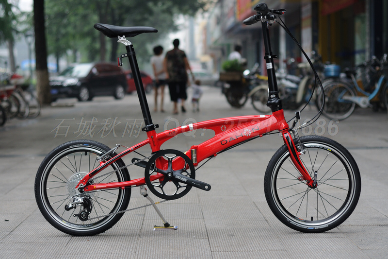

车型资料
GIANT捷安特
-
吉轮单车（龙舟路捷安特）
- 服务电话：028-86927608
- 服务地址：四川成都二环东五段东1号附13号（龙舟路口）
-
奇虎单车（建设路捷安特）
- 服务电话：028-83261128
- 服务地址：四川成都成华区建设北路三段11号附5-6号（龙湖三千集斜对面）
-
15款XTC820:4098.00
- 15款升级:前叉改成线控，牙盘换成喜玛诺的，后拨换成SLX的，涂装也有变化
- 与XTC880主要差别:880用的rockshox xc30的前叉，shimano447的油碟，820用的前叉是自家产的，刹车是339的
- 配置：
| 项目 | 配置 | 备注 |
|---|---|---|
| Size | 27.5*14.5/16/18/20 | |
| 车架 Frame | MY15 GIANT ALUXX SL 超轻量铝合金车架 | 1280元 |
| 前叉 Frame fork | GIANT WIN RL32 镁合金线控锁死避震前叉 | 260元 |
| 车把 Handlebar | GIANT WIN butted 铝合金31.8直把 | |
| 车首竖杆 Stem | GIANT WIN SL竖杆 | |
| 座垫 Saddle | SR Sirio 座垫 | |
| 座垫杆 | GINAT WIN SL 座垫杆 | |
| 变速把手Shifters | SHIMANO DEORE SL-M610 | |
| 前变速器 Front derailleur | SHIMANO DEORE SL-M610 | |
| 后变速器 Rear derailleur | SHIMANO SLX RD-M670-D | SLX M670带锁死后拨约320元 |
| DEORE M610中套件+615油碟+RT56碟片,约1450.00 | ||
| SLX M670 30速+SLX M675油刹+RT64中锁碟片,约2040元 | ||
| 飞轮 Cassette | SHIMANO CS-HG6210 11-34T | |
| 刹车 Brakes | SHIMANO M396L,BR-M395L | M396约250元,M615约540元,M670约630元 |
| XTC860刹车为BL-M506L,BR-M447L | ||
| 大齿盘 Crankset | SHIMANO FC-M612 40/30/22T | |
| 轮圈 Rims | MAVIC XM319 DISC 650B | 166元/对，XTC860轮组为GINAT SOLARSYS 培林轻量轮组 |
| 花鼓 Hubs | GIANT CENTER LOCK 铝合金花鼓 | 78元/对 |
| 钢丝 Spokes | HTSS 高强度钢丝 | |
| 轮胎 Tires | GIANT QUICKSAND 27.5X2.0 防剌轮胎 | |
| 后避震器 | 无 | |
| 备注 | 培林车首零件、内走线 |
- 14款XTC820:3998.00->3598.00(打折)
- 14款XTC750:3798.00->3418.00
- XTC770
- Challenger500
- 捷安特ATXCLASSIC铝合金山地车SLX27速BB7碟刹可锁死典藏版送车锁
-
温江捷安特专卖店简介
- 温江捷安特专卖店（GCW）为四川规模最大型GIANT专卖店，GAINT整车品种齐全、技术经验丰富、服务满意周到！经营GIANT自行车/电动车，莫曼顿自行车/电动车，Liv/Giant女性车，以及GIANT、MMT、Liv相关商品与GIANT个性定制DIY整车；洗车服务，保养、维护的多元化捷安特店，为温江捷安特自行车俱乐部！
- 成都捷轮单车生活馆在成都于2006年创建，是成都运动型自行车营运最具规模的车行之一，SHIMANO高级维修服务中心（SSC-P），行销网络跨成都、重庆、昆明等城市，掌握着多个销售通路。现在四川有成都CDBIKE、温江捷安特多个直营店；注册商标CD-WORKS 2009年注册，2010年通过国家工商行政管理总局商标局颁发注册证书，CD-WORKS品牌产品在深圳、太仓等多处OEM制造、生产。捷轮自行车品牌主要目标是在四川地区唯一规模化、工厂化、量产化、平民化的技术型、专业型、平民型产品最齐全的专业车店，CDBIKE品牌在运动型自行车中级市场有着不可动摇的地位和性价比，车行多年多来至今已小具规模，相关配件如变速器SHIMANO等常规产品均采用正规行货正品，质量有保障，DIY整车也在是在细节上优化，令相关车型在极具性价比的同时又结实耐用、美观大方；
- 从2011年开始成都捷轮经营捷安特品牌，我们利用优势的专业技术服务以及多年来DIY自行车经验，能充分给车友带来最专业的购车指导与服务，作为成都唯一二家GIANT RRS，FITTING服务中心，我们欢迎车友前来我们温江GIANT GCW店体验，选购一台最适合您的GIANT自行车或量身定作一台DIY自行车，绝对令您满意、满载而归！
- 官方网站：GIANT+DIY GIANT GCW
- GIANT GCW店地址：四川省成都市温江区文化路281-287号（光华大道与南熏大道交汇处）
- 028-87777911 (GIANT GCW) 028-82661838 (GIANT GCW光华大道·文化路店)
- QQ群（超级2000人）：群1：333188 群2：36918967 QQ：52786622（客服、投诉、建议） 邮件：zjinsert@sina.com
- GIANT 温江专卖店：成都市温江区柳台大道东段82号
- 客服热线： 028-61700058 (GIANT 大学城店）
- [XTC系列] GIANT TALON770:http://www.giant.so/thread-4048-1-1.html
捷安特温江CYCLING WORLD 地址：四川省成都市温江区文化路281号 联系电话：028-82661838,028-87777911 成都捷安特专卖（温江）店 地址：成都市温江区柳台大道东段82号（温江二中旁，海峡新城对面） 电话：028-61700058 TALON770 ￥：2598 12 XTC750 ￥：3598 12 XTC770 ￥：4798 XTC790 ￥：5398 XTC820 ￥：4098 XTC860 ￥：4798 2013 THUNDER 3 ¥ : 2798.00 ATX CLASSIC ¥ : 3118.00 Talon770:GIANT GlobaL 铝合金车架,ROCKSHOX XC28 铝合金避震前叉,SRAM X7 27S,AVID BB5机械碟刹 XTC860:2015 Giant ALUXX SL超轻量铝合金车架,Giant WIN32 镁合金线控锁死避震前叉,Shimano DEORE SL-M610/Shimano SLX RD-M670-D,Shimano BL-M506L BR-M447L XTC820:2015 Giant ALUXX SL超轻量铝合金车架,Giant WIN32 镁合金线控锁死避震前叉,Shimano DEORE SL-M610/Shimano SLX RD-M670-D,Shimano M396L BR-M395L XTC750:Giant Aluxx SL 山地车架,Giant WIN线控锁死镁合金避震前叉,Shimano DEORE,Shimano M355油压碟刹 XTC770:GIANT ALUXX SL 山地车架,SRAM XC 30TK CL 80避震前叉,SHIMANO DEORE 30S,彦豪DRACO油压碟刹 XTC777:Giant XTC7系 ALUXX SL铝合金车架,ROCKSHOX XC30锁死避震前叉,Shimano SLX,Shimano BL-M506/BR-M447 油压碟刹 2013 THUNDER 3 2798.00 超高性价比哦，4系变速器，AVID BB7，WTB坐垫~ ATX CLASSIC:ALUXX 经典ATX车架，XCM-V3机械锁死前叉80mm,shimano SLX 3*9速，Avid BB7机械碟刹
MAERIDA美利达
Trek崔克
- trek 4300:4500.00
UCC
- 特曼特:UCC特曼特2.0，也是27速，油碟刹车，全套390套件，价格3000
- 罗林斯迪
- 竞争者
DAHON大行

-
大行车架号查询
- 服务热线: 400 830 8979
- http://www.dahon.com.cn/bbs/forumdisplay.php?fid=50
- http://www.dahon.com.cn
- http://www.dahon.bj.cn
- DAHON车型说明
- 裸男教室集合帖——新人必读！
- 【裸男小教室】大行改车配件大点兵
- 2014上海自行车展: http://www.77bike.com/bbs/read.php?tid=124195
- 大行折叠车玩家俱乐部 --- 第二季: http://forum.xitek.com/forum.php?mod=viewthread&tid=678478&page=1&extra=&ordertype=1#pid48067310
- 大行折叠车车型价格: http://www.xici.net/d199195034.htm
-
加州美商大行集团(四川)分公司,刘博蓝
- 成都市武侯区双楠二环路西一段5号（红星美凯龙对面)
- 电话：028-85458386,18980836533
- QQ：43265071
- 网址：http://www.bobobike.com
- 俱乐部QQ群： 66166673
-
常见车型
- P8(KBC083),PAA083,MP18(KAA083),BYA412,FAA083,PAA073,SRA683
- SRA894:3300.00

# 专用铝合金最新款双梁管折叠车架，流线型设计，外型新颖， # 结构稳定，上补强管＋多处下补强片设计提升车架强度 # 补强片内镂空Dahon Logo雕花，彰显高等级车身份 # Ergon人体工学掌托把套，抓握舒适，减轻手部疲劳 # KORE 单轨超轻座管与座垫，重量更轻 # 铝制Grease FlowTM 车架锁技术 # Radius TelescopeTM 可调式铝合金双节竖管 # Kinetix Comp Avid Speed Dial 7铝合金刹车系统 # SRAM X9系列变速系统，更加流畅 # SRAM TRUVATIV Touro齿盘系列 # Kinetix Comp 20H, 58G超轻量级前花鼓 # 久裕“N”标28H 铝合金培林后花鼓 # WTB Freedom系列双层刀圈，有效降低风阻 # Schwalbe Marathon Racer轮胎，更耐磨、防滑 原为PG950飞轮，有人换SRAM PG970 9S9速飞轮 11-32T DAHON FAA094 PAA095原装飞轮 11-28T:11 12 13 14 16 18 21 24 28 重量：245g 11-26T:11 12 13 15 17 19 21 23 26 重量：223g 11-32T:11 12 14 16 18 21 24 28 32 重量：365g
- 北京社长单车:6999.00
- 尺 寸：20寸
- 档 位：18速
- 车架材质：铝合金车架、铝合金前叉
- 折叠技术：铝制Grease FlowTM 车架锁技术
- 车 头：铝合金横把；Radius TelescopeTM 可调式铝合金双节竖管；BiologicTM 人体工学把套
- 刹车系统：Kinetix 铝合金“V”刹；SRAM刹把
- 变速系统：SHIMANO TIAGRA 4600公路后拨；微转前拨、指拨
- 传 动：
- Prowheel中空一体牙盘（53/39T、175MM）；
- KMC快拆链条；
- SRAM 9速公路飞轮轮组(SRAM PG-950 公路飞轮11-28：11/12/13/14/16/18/21/24/28)；
- 铝合金双层车圈（20/28孔）；
- Kinetix 快拆式超轻轴承前花鼓、久钰快拆式两轴承后花鼓；
- DAHON 大行久裕久钰a551/f172 四培林花鼓74/130 20/28孔: http://item.taobao.com/item.htm?id=7204995227
- litepro fun 四培林花鼓 20/24/28孔: http://item.taobao.com/item.htm?id=25875500001
- SCHWALBE 20*1.5轮胎
- 折叠脚踏
- 座管座垫：Dahon TM Zorin Postpump 打气筒座管；Biologic 座垫
- 重 量：11.2公斤统一零售价：￥3699.00
- MP18外销版差别(VITESSE P18)
- 车架：内销版没有标明是什么铝，外销版标明是7005铝
- 刹车：明显不一样，感觉更结实，刹把更长；刹车调节螺丝是外漏的，能看到里面的结构；
- 坐垫和坐杆：都是BIOLOGIC，内销的坐垫是WTB，坐杆是DOHON的LOGO
- 外胎：外销的已经是世文的马拉松(SCHWALBE MARATHON RACER)了，内销的才是SPECIAL DOHON EDITION！
- 外销的车架前端有装车篮的孔。
- 外销和内销同样是微转的FD-R439前拨，是个三个盘的前拨
- 集优GIYO GM71自行车便携迷你高压打气筒
- 美国雷音lezyne CO2 REFILL 二氧化碳便携式充气瓶
- BARADINE 470CV可替换刹车胶,Baradine 453CV
- Avid Single Digit 7 SD7 V刹 FR7 抽屉式刹车皮
- 16寸 305mm
- 18寸 355mm
- 20寸 406mm
- 22寸 451mm
欧亚马/OYAMA
-
 欧亚马/OYAMA
欧亚马/OYAMA
- 四川省成都蜀汉路276号
- http://www.oyama.cn
- http://www.oyama.hk
- S500,FBI CX5
-
FBI AX1/AX3/AX5,990
FBI AX1/AX3 是欧亚马公司近年新推出的一款高档运动折叠车型。车架采用G609高强度轻量化铝合金管材， 车架设计直接吸收了台湾版A300的精髓，轴距长达110cm，高轴距的设计，确保这款折叠车在高速骑行的平稳性。 AX1采用了24速变速，前3后8，AX3采用了27速变速，前3后9，是爬坡的利器。 折叠后可以推行。
KHS功学舍
- KHS功学舍: KHS F20R 公路小跑车
Tern
-
 Tern
Tern
- http://www.ternbicycles.com/cn/
- 人力飞行器Tern Verge X20: http://www.700bike.com/3766.html

鸟车Birdy
问：什么是A鸟，什么是LX鸟，2者有什么不同？
答：店主5年玩折叠车的经验告诉大家，鸟采用V刹的有A鸟还有LX鸟和一个Sram3X8内变速的鸟（另有Frog小青蛙）,所谓A鸟是指采用Shimnao Alivio级别（M430）的套件，既8速飞轮，M430指拨（单右手）、HG41的飞轮FR5刹车、SD5刹车。A鸟是一个配置较低、入门级别的车。在A鸟之外还有一个LX鸟，相比起来后者有很大提高，在Shimano等级中，LX作为介于XT和Alivio级别之间，主要定位于竞赛训练级别，LX鸟采用了Xt级别的后拨,9速H50飞轮，LX刹把、LX花鼓、LX指拨、特氟龙变速刹车线，相对于A鸟，传动系统、轮组、花鼓有较大档次的提升。另外重量上也比A鸟轻了大约1斤左右。A鸟使用的是不可调式头管，Lx鸟使用的是分体头管。
问：作为鸟车的新手，是选择A鸟还是LX鸟，还是碟刹？
答：作为新手来讲，如果资金预算充足的前提下，建议一步到位购买配置相对比较稳妥的LX鸟，9速的LX鸟相对于A鸟有着相当明显的升级，和零配件的升级。能够带来更好的骑乘体验。如果您对折叠车很了解，喜欢改车，并且最终希望通过升级获得更好的骑乘体验，那么A鸟显然更加合适。但是LX鸟因为较高的配置，所以在购买后不需要进行任何升级，就能获得跟好的骑乘体验。
问：鸟的碟刹版本的问题？
答：碟刹版本的鸟车在前叉结构上做了调整，碟刹能带来更安全的刹车体验，但是因为更改了模具，前叉还有车架都做了相应的升级，在车架上取消了V刹柱，后花鼓采用Shimano的Capreo（小鹿）花鼓，和小鹿后飞，前花鼓为定制。相对于V刹车来讲，两款碟刹版本车的升级空间进一步减少，首先支持birdy碟刹的花鼓很少，其次Capreo飞轮、花鼓的价格不菲，市场上并不容易获得，也制约了后期升级，店主不建议新手一步到位直接入手Birdy的碟刹版本。而是建议在A鸟或者Lx鸟中根据自己的实力情况进行挑选。
Alex Moulton
- AM AlexMoulton TSR9:http://www.700bike.com/8744.html
Brompton
- Brompton布朗登：http://www.700bike.com/23432.html
- 【BROMPTON.小布】最近小布越改越不正路了！http://bbs.77bike.com/read.php?tid=140069

Brompton的所有车款均具备同样精巧的车架几何设计，其设计已经过35年不断的创新与改良，可追朔到1975年Andrew Ritchie在卧室里开发的第一个雏形。如今，已有更多的工作人员参与设计，将骑乘品质与体积小巧、便于携带的特性实现完美结合。
每台Brompton折叠起来的尺寸十分小巧，而且仅需10至20秒即可折叠。独特的折叠设计可确保车灯、缆线等不会受损，并且在折叠后，链条与齿轮不会弄脏衣服与行李袋。折叠之后不会有突出或松弛的零件，而且折叠后的单车就像一个小行李箱一样。
Brompton的骑乘品质与折叠性能一样出色。坚固的车架可让单车骑士的力量能够有效地进行转换，提供反应灵敏且轻快的骑乘感受，而标准尺寸的前后轮轴距则可提供高速骑乘时的稳定性。

BikeFriday
-
BikeFriday超快折叠：tikit
- Tikit是BikeFriday所有车型里折叠速度最快的（仅需3秒），体积最小的，适合城市通勤及短途郊游，休闲骑行的生活方式在Tikit上完美体现。
- http://www.77bike.com/bbs/read.php?tid=85509
- http://chegulu.1kapp.com/?page_id=10
- http://www.dongfanghong.com.cn/bbs/viewthread.php?tid=61499&highlight=tikit
ORI

- http://www.oribikes.com/
- 成都市大邑县金星乡白岩寺: http://www.700bike.com/15001.html
Cannondale
佳能戴尔、左撇子。
Other
- 兄弟单车TB道路玩家车行(GIANT):http://358339555.taobao.com
- 8081单车俱乐部：http://www.8081club.com
- 妹力单车馆
-
极地单车装备店:
- http://jididanche.taobao.com/
- 成都市锦江区大塘坎街25号（滨江路盐道街中学旁边巷子）
- 联系电话：13688088667 18980448667 QQ；41332171
- 头盔、骑行内裤、头巾、内六角、护膝、四折锁、报警器
-
波尔兄弟"波尔川藏线服务站"：
- http://517318.taobao.com/
- 地址：四川省成都市武侯区广福桥北街1号附8号(广福桥横街)
- 电话：028-85571820,QQ:5985400,手机: 13308019527
- "行走户外"：http://bybike.taobao.com/
- "mountainpeak旗舰店": http://mountainpeak.mall.taobao.com/
-
java老牛推荐：
- 正品GUB-329扩展架: http://item.taobao.com/item.htm?id=20423807617
- 自行车手机支架: http://item.taobao.com/item.htm?id=20093079629
- SHADOW精品VG20最新U2 LED单双锂兼容超亮1865强光手电筒玩友推荐: http://item.taobao.com/item.htm?id=24597756293
改车配件
指拨/后拨
-
裸男总结：
- 双盘用公路飞公路后拨，单盘用山地飞山地后拨，特殊情况才用双盘山地飞；后拨腿长能短则短，尽量要短的。
- SRAM凭借着腿短（就连X5这种低端都能很容易买到中腿后拨），以及低廉的价格，几乎在这个环节完爆S社。
- S社的山地指拨军团，也因为外形粗犷（包括后拨）、价格高昂被我统统过滤掉了，如果不在乎以上两点的人，用S社的山地指拨搭配个中臂M772一类的后拨，也还是不错的。
-
速联SRAM:
- x7指拨(08版)+X7中腿10版:山地指拨,山地飞轮就选SRAM的短/中臂山地后拨，搭配X7指拨
- x5指拨+x5中腿:简化版的X7,最便宜的9S系统
- X9指拨+X9短腿(最便宜的短腿山地后拨):双盘山地飞轮系统，算是中高端大行折叠车（6000-8000元级别）的NO.1，XT、XTR没合适的短臂山地后拨。
-
禧玛诺Shimano
- R770指拨:单双盘公路飞轮系统
- R440:中端指拨,公路飞轮就选S社的公路后拨，搭配R440指拨，约200元。
- 4500短腿(TIAGRA):100+元,R440指拨（单双盘公路飞轮系统）的最佳搭档之一。
- 5600短腿(105):比4500轻,齿容较小,R440指拨（单双盘公路飞轮系统）的最佳搭档之一。
- 6600G短腿UTSL(ULTEGRA):R770的最佳搭档
- 微转MicroSHIFT:
- Lite-Pro:
- 乔森Chosen:
-
关于车灯/电筒
-
建议
- 中头（匀称，散热也不错，光斑适中）
- 橘皮（中心光斑与边缘散光过度均匀）
- T6（光效高，光斑大）
- 单档（防止震动时跳档）
- 1000ma电流（综合亮度，散热，续航时间考虑）
- VG10
- 莹锋F8
- 月亮湖C8T6（浅黄光）
- XENO F7
- XENO F7X 强光手电筒 CREE T6
- 小直
- 清新范评测——紧凑小钢炮，Petzl Zipka Plus 2 Headlamp头灯:http://bbs.8264.com/thread-2163368-1-1.html
-
建议
-
关于脚踏
- 170.00,盒装台湾SARS CNC培林轴承超轻防滑脚踏 中间尺寸 山地折叠适用: http://item.taobao.com/item.htm?id=17756948773
- 120.00,litepro m228 两培林 轴承 脚踏 超润 性价比超m111 台湾原装: http://item.taobao.com/item.htm?id=19668110362
- 118.00,wellgo维格 KC001超轻CNC轴承脚踏 超mg-1特价 盒装行货: http://item.taobao.com/item.htm?id=19682985890
- 168.00,wellgo维格 KC007脚踏超轻 CNC轴承脚踏 超mg-1特价 盒装行货: http://item.taobao.com/item.htm?id=26978056455
- 135.00,wellgo维格 盒装 MG1脚踏 超轻 镁合金脚踏：http://item.taobao.com/item.htm?id=21971255662